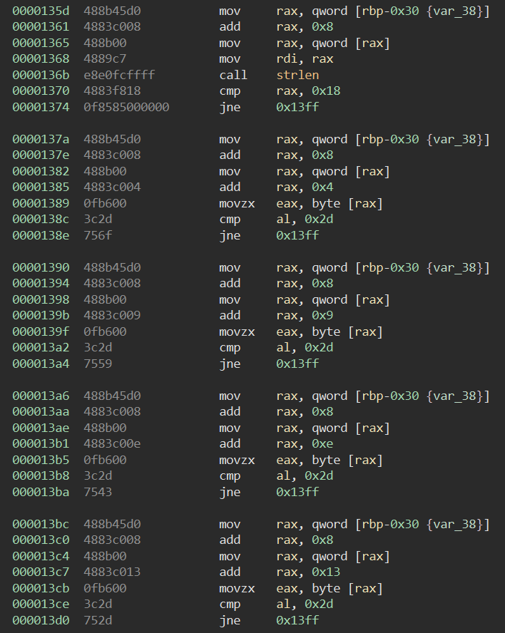
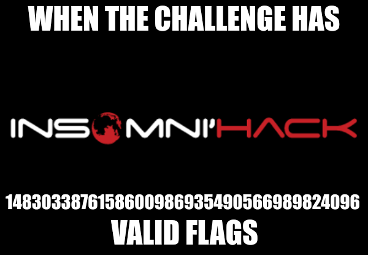
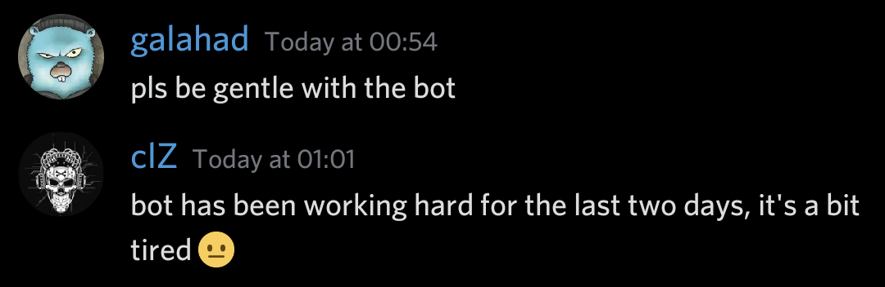
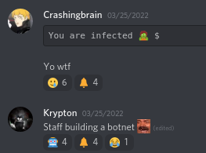

🚩 Insomni'hack 2022 CTF write-up
The Insomni’hack 2022 CTF is a CTF hosted during the Insomni’hack conference in Geneva, Switzerland. You had to register yourself so that you can attend to the on-site CTF. There was a total of 31 challenges. As a beginner in CTFs I decided to mostly take the easy challenges. The CTF was from March 25 (6pm UTC) to March 26 (4am UTC) 2022.
As my first on-site CTF it was nice to see how many people were participating. It was also pretty amazing to see how some people were prepared; some people even decided to transport their own big monitor(s) 🤯 It was an overall amazing CTF, so many thanks to the organizers!
All flags had the same format which was INS{...}. Anways, enough talking, here are the write-ups:
🐛 GDBug - 120 points
We were given a binary file (Download the file) that we had to execute to get the right flag. Let’s start by running it with basic ./gdbug:
When executing the file, a serial number to check needs to be given as an argument. After providing one as argument it would check the serial and return if it was a valid one or not. So let’s open up the binary in a disassembler and see how it works.
Looking at the top there was --debug, after running the binary with that serial it wasn’t a success; INS{Th1$Fl4gSuck$}. There also was a call to ptrace(), typical anti-debugging trick. If the binary was to be run from any debugger it would give this flag INS{W0ULDNT-1T-B3-T00-34SY}. Simply NOPing the entire ptrace check was enough to bypass it, now the binary can be ran in a debugger if needed. So let’s look at how the check for the serial works:
At first there is a variable x initialized with the value 0x539, then a new variable i initialized with the value 0x0. After that, a loop starts:
- It loops forever until
ihas reached the length of the serial, so it goes over all characters in the serial - The hexadecimal value of the character is then added to the
xvalue iis incremented by one
gdb also confirmed that it was the hexadecimal value of each character that was added to x:
At the end of that loop there were more checks as you can see from this:
This is the last assembly picture for this challenge, no worries..It will be checked if x is equals 0xb38, so the sum of all hexadecimal values of all characters in the serial must result to 0xb38. After this check, there are 5 more checks that are really easy to understand:
- The length of the serial must be
0x18 - At index
0x4,0x9,0xeand0x13of the serial, there should be a character with hexadecimal value0x2d, which is the hexadecimal value of-.
A valid serial pattern would look like xxxx-xxxx-xxxx-xxxx-xxxx.
Based on these restrictions, we could simply create a bruteforce tool in Python:
1 | from string import ascii_uppercase |
The output was quite interesting…
1 | Found: INS{AAAA-AAAA-AAAA-AAAA-AFZZ} |
The reason was quite simple, all of them were valid flags!
According to another player, the number is accurate🤖 Bot Telegram - 75 points
This challenge was my personal favorite. We were given a Telegram bot to chat with, and we had as challenge to exploit it. So at first I tried to execute some of the commands it has. None of them were really surprising when being executed. Then I tried with some random arguments after the command, and boom! When executing the command /challs leet the bot returned
Oops an error occured : (1054, “Unknown column ‘leet’ in where clause”)
The challenge is about an SQL injection. After trying to get the list of tables to perform an UNION attack the bot said that whitespaces were not allowed, only one argument was allowed. Fortunately there is an easy bypass, which is to replace all whitespaces with /**/ (comments), it will then be interpreted the same as a whitespace.
The first discovery was that some fields are too long to be sent along in some fields, so using SUBSTR() did the trick. The bot ended up leaking the users table.
Then we can leak the columns inside that table, there was the column username and password:
So now we can simply leak the credentials for the existing row(s). There was 3 users, one of them had the username admin and the password, the flag, INS{C0ngr@tz_YoU_d3$eRvE_T3iS_Fl@g}.
Also, dear staff members, sorry for bullying the bot :(
They sent these messages exactly when the challenge was solved🅰️ Wordle - 9 points
This challenge was based on the popular worlde game where you give a word of 5 characters and then you know if a character is in the word to guess, at the correct place or not in it at all.
We were given a netcat server that was listening on port 1337 and we had to exploit the game. We also had a binary file that did exactly the same, so that we can debug it (Download the file).
My first try was to actually spam the execution of the wordle binary and get the right word at some point since we were given an output that said what the correct word was.
Even when getting the right word, it gave the error message. So I opened the file in a disassembler. The assembly code for the logic was very easy:
The program moves to the address 0xcb1 if the value in data_2020e0 is equals 0xdeadbeef. It will then call the system() function with a randomly taken string from the possible words. One of these words was /bin/sh, so it was clear there was shell access at the end.
So let’s put deadbeef as user input? Well, the user input is stored in data_2020c0, so that won’t work. However, the user input is parsed with the unsafe gets() method, which means it is possible to overflow that value.
There is a difference of 32 bytes between both addresses. So a simple overflow of 32 bytes can let me put anything inside data_2020e0.
The payload for that overflow would be the following:
1 | (python2 -c 'print "A"*32 + "\xef\xbe\xad\xde"'; cat) | nc wordle.insomnihack.ch 1337 |
Since there was not only /bin/sh in the list of words, the program had to be executed multiple times.
In the end the flag was INS{C0ngr@tulat1on5!_th3_word_was_d3adBeef!}.
🌊 Weak Rivest 4 - 7 points
Weak Rivest 4 reminded me of the RC4 cipher. The cipher is using a keystream and is, of course, considered as insecure.
We were given 3 strings, 1 plaintext and 2 ciphertexts:
1 | pt1 = I_do_not_like_ponies |
All the strings had the same length, we simply had to convert the pt1 to its hexadecimal representation 495F646F5F6E6F745F6C696B655F706F6E696573 to also get a length of 40. We had one plaintext, which was encrypted with a key and resulted to one of the cipher text. The flag was most likely the second plaintext (pt2), which is unknown.
To solve the challenge there is the reused key attack on stream ciphers, such as RC4. To explain is shortly, XORing both cipher texts will remove the key, which then results to the same when XORing the both plaintexts. So for the challenge:
$ct1 \oplus ct2$ = $pt1 \oplus pt2$
So to get pt2 we simply need to:
- Take every time 2 characters from both
ct1andct2 - Convert them to a hexadecimal number
- XOR them together to get a
result - Get 2 characters from
pt1 - Find a hexadecimal number that, if XORed with the 2 characters taken from
pt1, leads to the sameresult - Append the character corresponding to that value to a
flagvariable.
I ended up making the following Python script:
1 | import time |
This resulted in the following flag: INS{D0_No7_u$3_Rc4!}
🔮 Magic Words - 7 points
For this challenge we were given a link to a website. The website asked for a sentence, so basically we had to get this sentence. When looking at the source code there was some checks, so the first thing to do was to create the same file on the local machine.
Then simply take each check one by one and get the words in each paragraph. Then recreate the checks locally and execute the script.
1 | // More code above... |
Then the result was please show of if in of is in an it to me to to of is by in or the way. There was just to find a good word that would fit in the sentence for pleas show [of if in of is in an it to me to to of is by in or] the way, the best is definitely please show me the way.
When submitting that, the flag (INS{jQu3ry_1$_Fr3@kiNg_C0oL}) was given as response.
👋 Welcome challenge - 6 points
We get a link to a GitLab repository where there are instructions to follow to actually solve the challenge which included commiting changes.
After folowing the steps the first time my shell looked kind of, weird:
1 | You are infected 🧟 $ |
But I wasn’t the only one who got this joke:
The staff was building a botnet, no worriesAfter checking where this came from, it was located in inso/.circleci/pre-commit, there also was a exec $SHELL command at the end of the file, to make sure you see that. By simply removing the lines that changed my PS1 variable and removing the exec $SHELL command, I was able to get the flag in return.
The flag was given with a response to a failed commit like the following: remote: INS{S0_F4r_S0_g00d}.